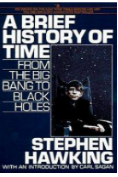
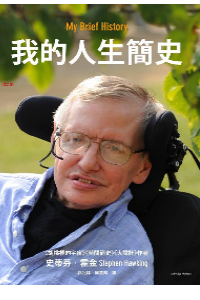
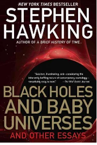

一:時間簡史
講述關於宇宙的起源和命運，主要介紹了什麼是宇宙、宇宙發展的最新狀況和關於宇宙本性的最前沿知識，解釋了黑洞和大爆炸等天文物理學理論。
《時間簡史》榮登《星期日時報》暢銷榜237周。

二:我的人生簡史
此書描繪了霍金的成長過程，並且還添加了圖片，加以考證。使得這本書更像一本故事書，而並非傳記（註：此書類別為傳記），通過此書可以了解到霍金人生的不幸以及其他遭遇，而並非只讓讀者沉迷於霍金的貢獻。

三:大設計
於2010年9月7日出版。
書中論證宇宙可依照科學原理而渾然天成，不須向上帝過問，甚至沒有所謂造物主的位置，因此而遭到信仰亞伯拉罕一神理論的宗教人士如猶太信仰、天主教會、基督教會以及伊斯蘭教的抨擊。
四:胡桃裡的宇宙
史蒂芬·霍金為其成名著作《時間簡史》在2001年寫的續篇。它講述了現代物理學的歷史和原則。
霍金試圖將愛因斯坦的大統一理論和理察·費曼的多重歷史觀點融入到一個能闡述宇宙中發生的一切事情的自洽的理論系統中。
五:站在巨人肩上
「如果說我看得比別人遠，那是因為我站在巨人的肩上」──牛頓
支配宇宙的自然法則為何？星球如何運轉？又是什麼力量讓它們維持在軌道之上？千古以來的人類嘗試追求這些問題的答案，這也使得那些有過人洞察力的科學家們勇於提出他們的獨特見解。

六:黑洞、嬰兒宇宙及其他
他驚天動地的學說徹底改變了人類的宇宙觀。
宇宙的演化孕育出生命、思維和智慧，宇宙之於生命，猶如母親之於嬰兒。只要我們生活得稍微抽象一些，暫且忘卻一下世界的無聊，就能從宇宙這本大書中讀到真善美。